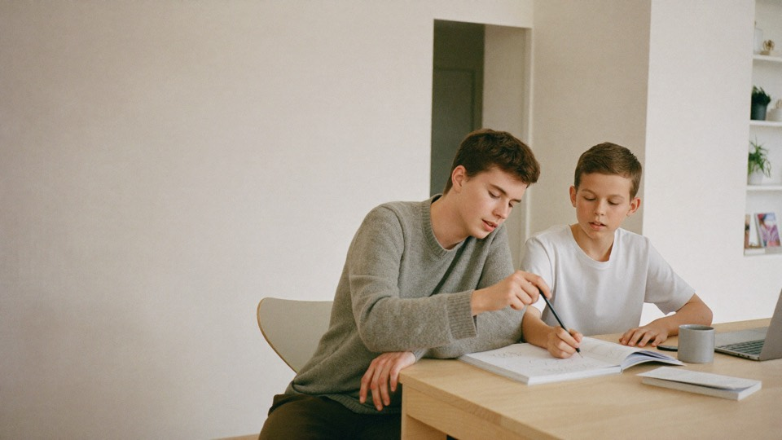
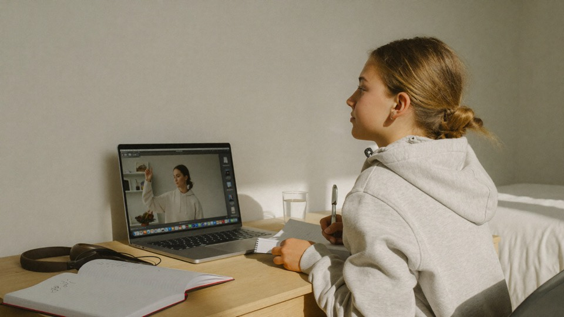

By young people,
for young people.
We create opportunities for young people to take their first steps into working life. At Nextrum you get the chance to work, grow and build experience — and at the same time we offer personal tutoring for students who want to develop and reach their goals.
- 379 kr an hour
- The first hour on us
- Reply within 24 hours
- No minimum term
Practice that
feels like a game.
NexLäx is Nextrum’s own digital practice between sessions: short levels in school subjects, where every answer is marked straight away. Students collect XP and badges, the tutor sees what has stuck, and you see the same in your view.
x + 9 = 23What is x?

-
A path through the subject
Topics in order, level by level, with a suggested next step. Everything is open, so students can practise exactly what they need.
-
Marked on the spot
Choose, type, match or put in order. A wrong answer shows the right one and why, and the question comes back.
-
Stars, XP and badges
Days in a row, today’s challenges and badges to collect. What shows is what the student has actually done.
-
Tied to the sessions
The tutor sets levels that go with the session and sees how they went before the next one.
Illustration of NexLäx. The question and the numbers are examples.
- Maths
- Swedish
- English
- Science
- Social studies
- Spanish
- German
- French
From year 1 to upper secondary, plus Spanish, German and French in years 7–9. Before the national tests there is our own practice in the style of the tests. NexLäx is included with tutoring.
The right person can make
all the difference.
At Nextrum we match every student with one of our tutors, based on what the student needs and the subjects where support is wanted. Together they build better understanding, more motivation and greater confidence at school.
You get a personal study plan, can book sessions online or in person, and receive a structured report after every one. That way you can easily follow the student’s progress between sessions. We take care of matching, booking and planning — with no registration fee and no minimum term.
From first contact
to the first session.
-
01
Get started
Tell us what the student needs help with, which year group and which subjects. It takes about two minutes.
-
02
We get in touch within 24 hours
We go through the need together with you before any matching is done.
-
03
Matching
We select the tutor who suits the student best — based on subject, level, need and personality.
-
04
Study plan and booking
We draw up an individual study plan for the student and you book your sessions.
-
05
Follow-up
After each session you get a report and access to extra digital exercises.
If the grade doesn’t go up,
we keep going.
We believe in the right match and a school year of real work, so much that we stand behind it. If the student does their part and the grade still doesn’t go up, we keep helping without you paying anything.
You choose the subjects that need a lift, and we build the plan towards this year’s grade.
Regular sessions, tasks in between and a tutor who keeps it all together.
Every session, report and task is visible to you, and the guarantee is judged on what you can see for yourselves.
If the grade doesn’t go up even though you did your part, you get extra homework help from us free of charge.
Terms apply. Help with other subjects and homework in general is included as usual and does not affect the guarantee.
Meet some of our tutors.
Our tutors are young, committed and recently took the same courses themselves. They know what it feels like to revise for a test, get stuck on a problem and try to understand something for the first time.
Safe help.
Personal support.
When young people help young people it has to be safe for everyone. That is why we build safety into every step, rather than checking afterwards.
-
Personal tutoring
One tutor, one student, one plan. No group and no template.
-
Matching we stand behind
You do not browse a catalogue. We choose, because the wrong match is worse than no match.
-
Flexible
Online or in person, and you switch between the two from session to session.
-
Everything in one place
Booking, messages and payment in the platform — nothing scattered across apps.
-
Progress you can follow
The study plan, the sessions and the report after each one — collected in the student view.
-
Safety at every step
Interviewed and trained tutors, payment through Nextrum and follow-up after sessions.
You see what is happening.
Through Nextrum’s student view, student and parent can follow progress, see the study plan, book sessions and read the feedback — all in one place.
The next session is tomorrow at four.
Times to reply to 10
Elsa suggests Thu 8 Oct, 17:00–18:00. Swedish, in person.
Done. The session is under My sessions.
In numbers
Sessions over time 6 months
How the sessions went 12 reports
Book a session
Tap a day and suggest a time. Your tutor accepts it or suggests another.
Your suggestion
Pick a day in the calendar Oct · 15:00 · Maths
Elsa replies under Suggested times. Until then the session is under My sessions.
My sessions
Your sessions, the plan behind them and what happened in each one.
Goal: confident with equations before the test in week 44.
We revised equations with brackets. It was slow going at first but clicked towards the end, and they solved the last three problems on their own. For next time: problems 12–18 in the book.
NexLäx
The path through the subject, one level at a time. Every answer is marked straight away and gives XP.
Equations is done, +270 XP. Next step: Percentages.
Your path Maths
Hi! Great work today, the equations went much better.
I have put problems 12–18 in NexLäx. Let me know if anything feels tricky.
Thanks! They actually enjoyed it for once.
Great to hear! Then we carry on on Tuesday.
See you! Bring the maths book if you can.
Absolutely, I will add percentages to the study plan.
Payment
You pay for each session by card, either in advance or after the session when you confirm the report. After the session you can choose an invoice instead, which comes at the start of the following month with ten days to pay and no fee.
To pay 1 sessionNothing left
Paid. The receipt comes by email.
The card is entered with Stripe. We never store it.
Paid sessions
Illustration of the student view — the content is an example
This is what a session can look like.


Every student starts from a different place. With the right support, everyone can take the next step.
Nextrum

Want to help someone
else succeed?
Anyone allowed to work can become a tutor with us, students included. You help younger students with school, earn your own money and build experience that genuinely belongs on a CV.
- FlexibleYou decide when and how much you want to work.
- Paid for your timeBooking and payment are handled by Nextrum.
- Experience that countsCommunication, leadership and teaching — for real.
- You make a differenceSomeone younger will remember that you were the one who made it click.
Already a tutor? Log in
Fill in the application with subjects, year groups and times that suit you.
A short conversation where we get to know you and how you explain things.
We run our checks and you get your tutor profile.
Accept requests and hold your first session.
Before the first reviews.
We are right at the beginning and have no reviews to show yet. The first ones will come from real families and appear here once they exist, with their permission. Until then, you will hear it from us, by name.
We started Nextrum to make it easier for young people to take their first step into working life – while helping other young people reach their goals. To us, Nextrum is about creating opportunities that actually make a difference.
Leo & Alex founders of Nextrum
Ready to take the next step?
For those who want to learn more. For those who want to help others.
- No minimum term
- Costs nothing to ask
- Grade guarantee